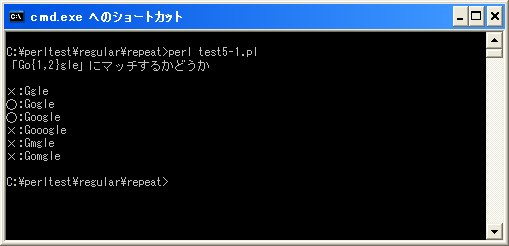

直前の文字を指定した範囲の回数繰り返し({min,max})
今まで見てきた「*」「+」「?」については直前の文字を0個、1個、又は1個以上繰り返し現れた場合にマッチしていましたが、指定した範囲の間の数だけ繰り返し表れる場合にマッチする正規表現を記述できます。
記述方法は次のようになります。
{min,max}
指定する範囲は「min」及び「max」で指定します。例えば直前の文字が2回から4回の範囲で繰り返し現れる場合にマッチする場合は次のように記述します。
/Go{2,4}gle/
上記の場合、直前の文字(今回は「o」)が指定した範囲の2回から4回の間繰り返し現れた場合にマッチします。その為、今回の場合でマッチするのは「oo」「ooo」「oooo」の場合です。
マッチするもの：
Google Gooogle Goooogle
2番目の引数を省略する
2番目の引数を省略すると、直前の文字が現れることができる上限が無くなります。
{min,}
カンマ(,)は省略しないで下さい。省略した場合は別の意味となります。
指定する範囲は「min」だけを指定します。例えば直前の文字が2回以上繰り返し現れる場合にマッチする場合は次のように記述します。
/Go{2,}gle/
上記の場合、直前の文字(今回は「o」)が指定した範囲の2回以上繰り返し現れた場合にマッチします。その為、今回の場合でマッチするのは「oo」「ooo」「oooooooo」などです。
マッチするもの：
Google Gooogle Goooogle Gooooogle Goooooogle Gooooooogle
回数を指定する
1番目の引数だけを指定する(2番目の引数とカンマを省略する)と指定した回数だけ直前の文字が現れる場合にマッチします。
{num}
繰り返し現れることができる回数を1つだけ指定します。例えば直前の文字が2回現れる場合にだけマッチする場合は次のように記述します。
/Go{2}gle/
上記の場合、直前の文字(今回は「o」)が2回現れた場合にマッチします。その為、今回の場合でマッチするのは「oo」だけです。
マッチするもの：
メタ文字「*」「+」「?」との関係
今回の範囲指定を使えばアスタリスク(*)、プラス(+)、クエスチョン(?)のメタ文字と同じことをすることが出来ます。
* {0,} 直前の文字を0回以上繰り返し
+ {1,} 直前の文字を1回以上繰り返し
? {0,1} 直前の文字が0回か1回
どちらの表記を使っても構いませんが、条件に合うのであれば「*」「+」「?」のメタ文字を使用した方がコンパクトに記述することが可能です。
サンプルプログラム
では簡単なプログラムで確認して見ます。
use strict;
use warnings;
use utf8;
binmode STDIN, ':encoding(cp932)';
binmode STDOUT, ':encoding(cp932)';
binmode STDERR, ':encoding(cp932)';
print "「Go{1,2}gle」にマッチするかどうか¥n¥n";
&check("Ggle");
&check("Gogle");
&check("Google");
&check("Gooogle");
&check("Gmgle");
&check("Gomgle");
sub check{
my ($str) = @_;
if ($str =~ /Go{1,2}gle/){
print "○:$str¥n";
}else{
print "×:$str¥n";
}
}
上記を「test5-1.pl」の名前で保存します(文字コードはUTF-8です)。そしてコマンドプロンプトを起動し、プログラムを保存したディレクトリに移動してから次のように実行して下さい。

( Written by Tatsuo Ikura )

著者 / TATSUO IKURA
初心者～中級者の方を対象としたプログラミング方法や開発環境の構築の解説を行うサイトの運営を行っています。